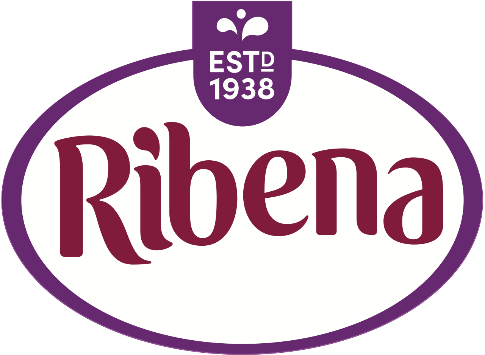
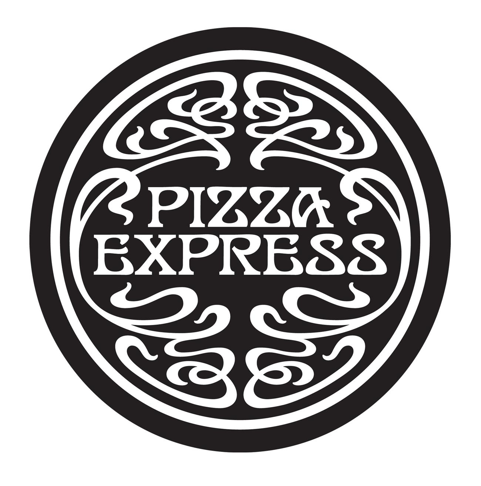
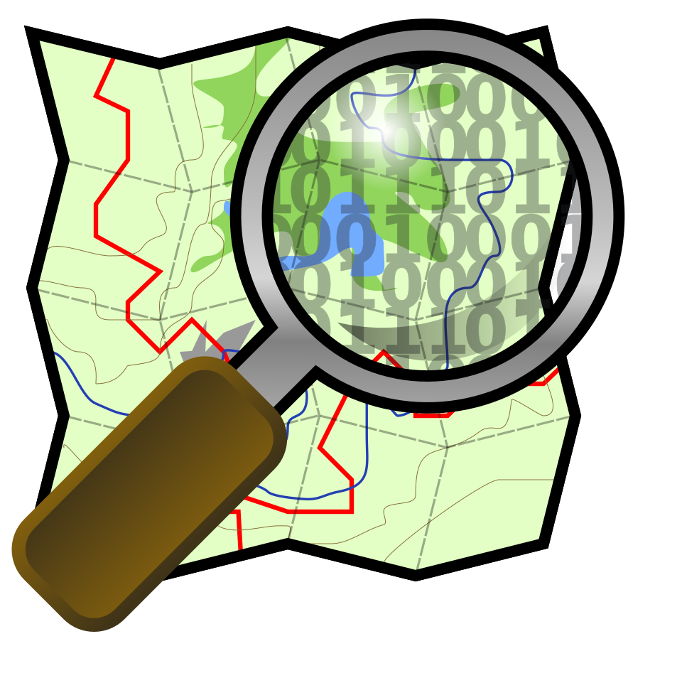
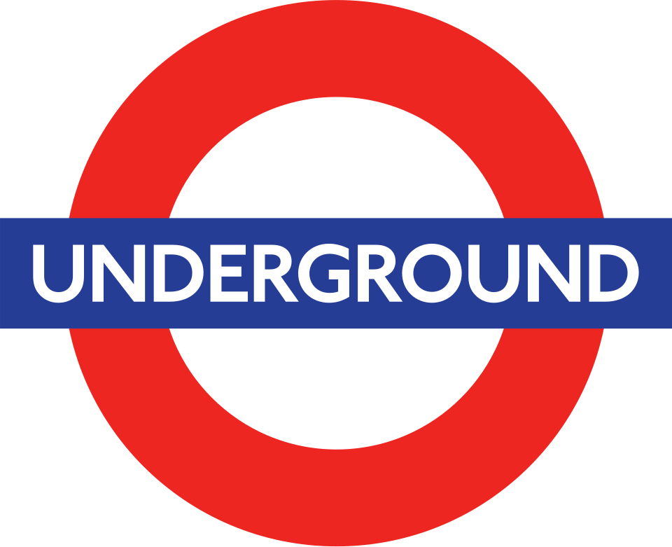
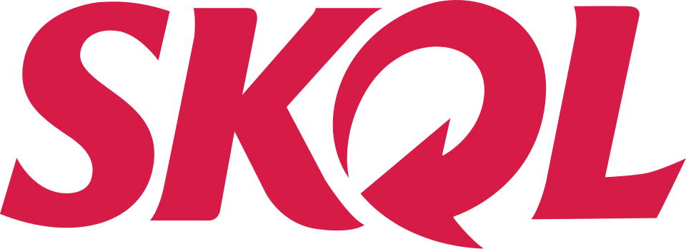
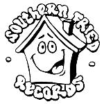
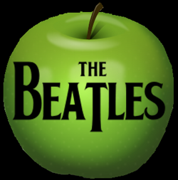
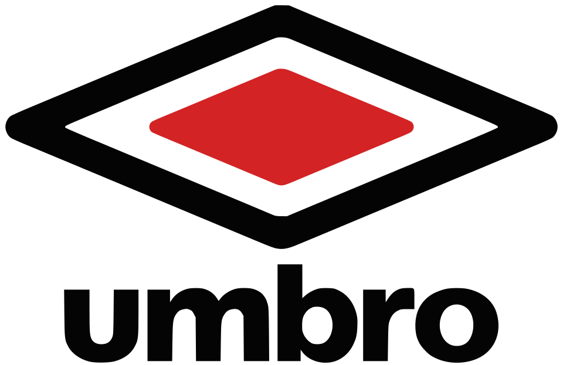
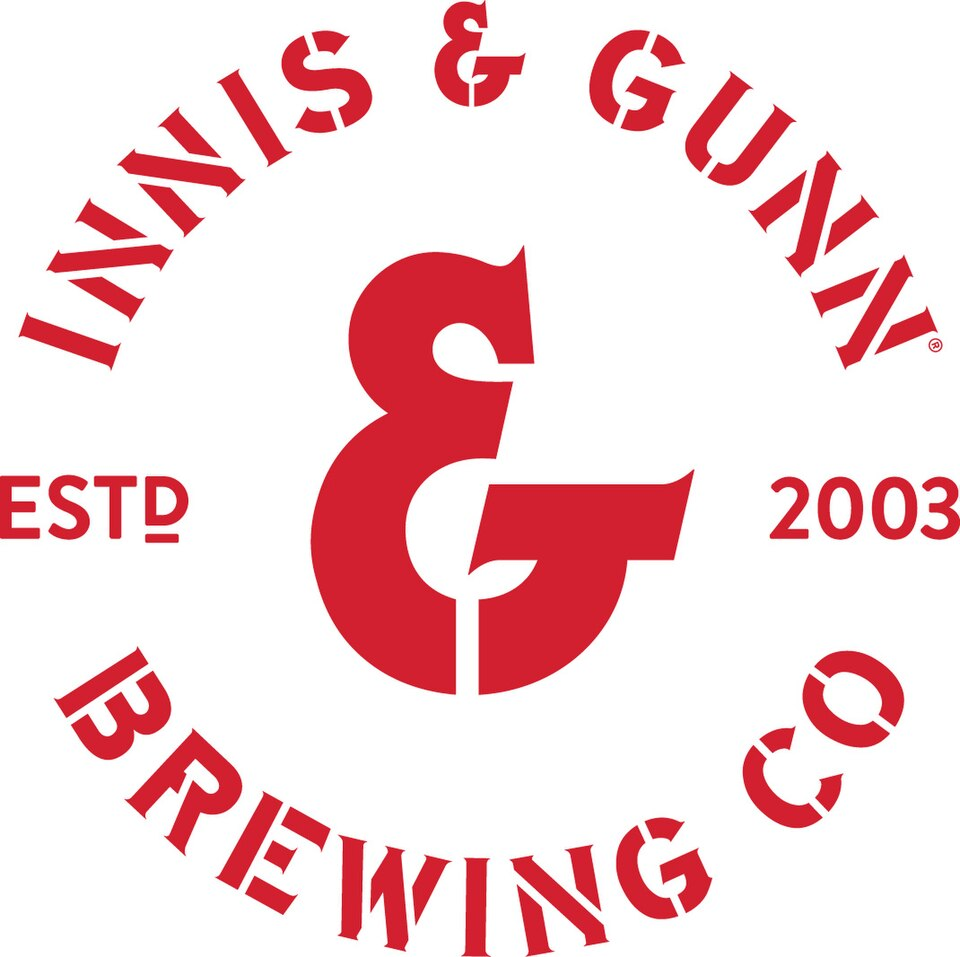

영국 브랜드 127
영국에서 시작한 브랜드 127개를 로고와 함께 모았습니다. 대표적인 영국 브랜드로는 British Broadcasting Corporation, IMDb, 오픈스트리트맵(OpenStreetMap), 로이터(Reuters), 런던 지하철(London Underground), 영국항공(British Airways) 등이 있습니다. 수록 기준은 검수된 브랜드 설명이나 공식 웹사이트가 일치하는 위키데이터 개체에서 기원 국가가 확인된 경우로 한정했습니다.
다른 국가 보기
국가별 전체 →산업별로는 미디어·엔터테인먼트 27개, 식음료 18개, 모빌리티 14개, 브랜드·비즈니스 11개 순입니다. 설립연도가 확인된 브랜드는 102개이며 가장 오래된 곳은 1801년, 가장 최근은 2019년에 시작했습니다. 시기별로는 1900년 이전 19개, 1900~1949년 17개, 1950~1999년 51개, 2000년 이후 15개입니다. 수록 자료로는 로고 이미지 120개, 로고 변천 자료 15개, 연혁 타임라인 19개를 갖췄습니다. 이 가운데 97개는 공식 웹사이트가 일치하는 위키데이터 개체로 연결해 두었습니다.
영국 브랜드 목록
 러쉬LUSH영국 · 1995년
러쉬LUSH영국 · 1995년러쉬(LUSH)는 신선한 천연 원료로 만든 핸드메이드 화장품을 판매하는 영국 코스메틱 브랜드이다.
리복(Reebok)은 영국 볼턴에서 시작된 운동화·스포츠 의류 브랜드이다.
 버버리BURBERRY영국 · 1856년
버버리BURBERRY영국 · 1856년버버리(Burberry)는 1856년 설립된 영국의 럭셔리 패션 하우스이다.
비비안 웨스트우드(Vivienne Westwood)는 펑크를 주류 패션으로 끌어올린 영국의 독립 럭셔리 패션 브랜드이다.
 로열 더치 쉘Shell영국 · 1890년
로열 더치 쉘Shell영국 · 1890년셸은 영국·네덜란드에 뿌리를 둔 글로벌 에너지·석유 기업으로, 원유 탐사와 생산부터 정유, 가스, 화학, 주유소 소매 판매까지 에너지 가치사슬…
 퍼스트 초이스First Choice영국
퍼스트 초이스First Choice영국퍼스트 초이스(First Choice)는 영국의 패키지 휴가 브랜드로, TUI 그룹에 속해 있다.
아이슬란드Iceland영국 · 1970년아이슬란드(Iceland)는 냉동식품을 전문으로 하는 영국의 슈퍼마켓 체인이다.
 로이즈Lloyds영국
로이즈Lloyds영국로이즈(Lloyds)는 검은 말 심볼로 잘 알려진 영국의 대형 소매은행으로, 로이즈 뱅킹 그룹(Lloyds Banking Group)에 속한다.
 와이즈Wise영국 · 2011년
와이즈Wise영국 · 2011년와이즈(Wise)는 2011년 에스토니아 출신 크리스토 캐르만과 타베트 힌리쿠스가 영국 런던에서 창업한 핀테크로, 출범 당시 사명은…
 왕립동물학대방지협회RSPCA영국 · 1824년
왕립동물학대방지협회RSPCA영국 · 1824년왕립동물학대방지협회(RSPCA)는 1824년 영국 런던에서 설립된 세계 최초이자 가장 오래된 전국 단위 동물복지 자선단체다.
 옴렛Omlet영국 · 2004년
옴렛Omlet영국 · 2004년옴렛(Omlet)은 2004년 영국에서 설립된 반려동물·도시 양계 디자인 제품 회사로, 모던 플라스틱 닭장 '에글루(Eglu)'로 가장 잘…
 페이세이프Paysafe영국
페이세이프Paysafe영국페이세이프(Paysafe)는 영국에 본사를 둔 다국적 온라인 결제·디지털 지갑 기업이다.

리베나Ribena영국리베나는 블랙커런트(Ribes nigrum)를 원료로 한 영국의 대표적 과일 농축 음료 브랜드다.
슬래진저Slazenger영국 · 1881년슬래진저(Slazenger)는 1881년 영국 런던에서 설립된 스포츠용품 브랜드로, 현존하는 세계에서 가장 오래된 스포츠 브랜드 중 하나로…

피자익스프레스Pizza Express영국 · 1965년피자익스프레스는 1965년 영국 런던 소호에서 시작된 캐주얼 다이닝 피자 레스토랑 체인이다.
 포트메리온Portmeirion영국 · 1960년
포트메리온Portmeirion영국 · 1960년포트메리온(Portmeirion)은 1960년 영국에서 설립된 도자기·식기 브랜드이다.
 마더케어Mothercare영국 · 1961년
마더케어Mothercare영국 · 1961년마더케어(Mothercare)는 임산부와 영유아·아동용품을 전문으로 하는 영국의 유아용품 소매 브랜드이다.
 MPL 커뮤니케이션스영국 · 1970년
MPL 커뮤니케이션스영국 · 1970년MPL 커뮤니케이션스(MPL Communications)는 폴 매카트니의 사업을 총괄하는 음악 출판·엔터테인먼트 지주회사이다.
 피트니스 퍼스트Fitness First영국
피트니스 퍼스트Fitness First영국피트니스 퍼스트(Fitness First)는 영국에서 시작된 헬스클럽·피트니스 짐 체인 브랜드이다.
 셀프리지스Selfridges영국 · 1909년
셀프리지스Selfridges영국 · 1909년셀프리지스(Selfridges)는 영국의 백화점 체인이다.
멀버리Mulberry영국 · 1971년멀버리(Mulberry)는 명품 가죽 핸드백으로 대표되는 영국의 가죽 잡화 브랜드이다.
 맥라렌McLaren영국 · 1963년
맥라렌McLaren영국 · 1963년맥라렌(McLaren)은 영국 서리주 워킹에 본사를 둔 모터레이싱 팀으로, 1963년 브루스 맥라렌이 설립했으며 현재 포뮬러 원에 참가하고…
 딕슨스Dixons영국 · 1937년
딕슨스Dixons영국 · 1937년딕슨스(Dixons)는 1937년 영국에서 출발한 가전 소매 브랜드로 현재는 Currys로 통합돼 매장 브랜드로는 폐지되었다.
리버 아일랜드River Island영국 · 1948년리버 아일랜드(River Island)는 1948년 설립된 런던 기반의 영국 하이스트리트 패스트패션 브랜드이다.
 유럽 부흥 개발 은행European Bank for Reconstruction and Development영국 · 1991년
유럽 부흥 개발 은행European Bank for Reconstruction and Development영국 · 1991년유럽 부흥 개발 은행(European Bank for Reconstruction and Development)은 동구권과 소련의 붕괴 이후…
 영국항공British Airways영국 · 1974년
영국항공British Airways영국 · 1974년영국항공(British Airways)은 1974년에 영국유럽항공과 영국해외항공이 재합병하여 설립된 영국의 항공사이다.
 슈웹스Schweppes영국
슈웹스Schweppes영국슈웹스(Schweppes)는 1783년 독일 출신 발명가 Johann Jacob Schweppe가 스위스 제네바에서 만든 영국의 탄산음료…
 조니 워커Johnnie Walker영국 · 1820년
조니 워커Johnnie Walker영국 · 1820년조니 워커(Johnnie Walker)는 스코틀랜드의 블렌디드 스카치 위스키 브랜드이다.
 펜타그램Pentagram영국 · 1972년
펜타그램Pentagram영국 · 1972년펜타그램(Pentagram)은 그래픽 디자인, 브랜드 아이덴티티, 건축, 인테리어, 제품 디자인 등 다양한 분야를 다루는 영국 런던 노팅힐…
 세인즈버리스Sainsbury's영국 · 1869년
세인즈버리스Sainsbury's영국 · 1869년세인즈버리스(Sainsbury's)는 영국의 슈퍼마켓 체인이다.
 로이터Reuters영국 · 1851년
로이터Reuters영국 · 1851년로이터(Reuters)는 독일인 파울 율리우스 로이터가 설립한 영국의 뉴스·정보 제공 기업이다.
 왕립학회Royal Society영국
왕립학회Royal Society영국왕립학회(Royal Society)는 공식 명칭이 '자연과학 진흥을 위한 런던 왕립학회'인 영국의 국립 과학 아카데미이자 학회이다.
 버진 애틀랜틱Virgin Atlantic영국 · 1984년
버진 애틀랜틱Virgin Atlantic영국 · 1984년버진 애틀랜틱(Virgin Atlantic)은 영국 웨스트서식스주 크롤리에 본사를 둔 영국의 항공사이다.
 로터스 자동차Lotus Cars영국 · 1952년
로터스 자동차Lotus Cars영국 · 1952년로터스 자동차(Lotus Cars)는 영국에 기반을 둔 스포츠카 제조업체이다.
 복스홀 자동차Vauxhall영국 · 1857년
복스홀 자동차Vauxhall영국 · 1857년복스홀 자동차(Vauxhall)는 1857년 설립된 영국의 자동차 회사이다.
 리얼 월드 레코드Real World Records영국 · 1989년
리얼 월드 레코드Real World Records영국 · 1989년리얼 월드 레코드(Real World Records)는 피터 가브리엘이 설립한 영국의 월드뮤직 전문 음반사이다.
 롤스로이스 리미티드Rolls-Royce Limited영국 · 1906년
롤스로이스 리미티드Rolls-Royce Limited영국 · 1906년롤스로이스 리미티드(Rolls-Royce Limited)는 1904년 맨체스터에서 Charles Rolls와 Henry Royce의 협력으로…
 대영박물관British Museum영국
대영박물관British Museum영국대영박물관(British Museum)은 영국의 런던 블룸즈베리에 있는 영국 최대의 국립 공공박물관이다.

오픈스트리트맵OpenStreetMap영국 · 2004년오픈스트리트맵(OpenStreetMap)은 누구나 참여할 수 있는 오픈 소스 방식의 무료 지도 서비스이다.
 ARM 홀딩스Arm Holdings영국 · 1990년
ARM 홀딩스Arm Holdings영국 · 1990년ARM 홀딩스(Arm Holdings)는 프로세서와 관련 시스템을 설계하고 지식재산을 라이선스하는 영국 반도체 회사이다.

런던 지하철London Underground영국 · 1890년런던 지하철(London Underground)은 영국 그레이터 런던과 에식스주, 하트퍼드셔주, 버킹엄셔주 등 주변 지역에서 운영되는…

스콜Skol영국 · 1959년스콜(Skol)은 스코틀랜드에서 처음 양조된 국제적인 라거 맥주 브랜드이다.
 Aon(회사)Aon plc영국 · 1982년
Aon(회사)Aon plc영국 · 1982년Aon(회사)(Aon plc)는 위험 관리와 보험 중개, 인적자본 관련 자문을 제공하는 영국의 국제 전문 서비스 회사이다.
 잉글랜드 은행Bank of England영국
잉글랜드 은행Bank of England영국잉글랜드 은행(Bank of England)은 1694년 설립된 영국의 중앙은행이다.
 마크스 & 스펜서Marks & Spencer영국 · 1884년
마크스 & 스펜서Marks & Spencer영국 · 1884년마크스 & 스펜서(Marks & Spencer)는 의류, 뷰티 제품, 홈 제품, 식품을 판매하는 영국의 다국적 소매업체이다.
 맥라렌 오토모티브McLaren Automotive영국 · 1985년
맥라렌 오토모티브McLaren Automotive영국 · 1985년맥라렌 오토모티브(McLaren Automotive)는 잉글랜드 워킹의 맥라렌 테크놀로지 센터에 본사를 둔 영국의 고급 자동차 제조업체이며,…
 제트투컴Jet2.com영국 · 2002년
제트투컴Jet2.com영국 · 2002년제트투컴(Jet2.com)은 영국 리즈 인근 리즈 브래드퍼드 공항에 본사를 둔 영국의 저비용 항공사이다.
 롤스로이스 자동차Rolls-Royce Motor Cars영국 · 1998년
롤스로이스 자동차Rolls-Royce Motor Cars영국 · 1998년롤스로이스 자동차(Rolls-Royce Motor Cars)는 영국 치체스터에 본사를 둔 자동차 수공 제조 기업으로, 독일 BMW를 모기업으로…
전체 목록

서던 프라이드 레코드 Southern Fried Records서던 프라이드 레코드(Southern Fried Records)는 1994년 노먼 쿡(팻보이 슬림)이 영국에서 설립한 댄스 음악 레이블이다.세인트폴 대성당 St Paul's Cathedral세인트폴 대성당(St Paul's Cathedral)은 영국 시티 오브 런던의 러드게이트 힐에 있는 높이 111m의 성공회 성당이다.스캄 레코드 Skam Records스캄 레코드(Skam Records)는 1990년경 앤디 매독스가 영국 맨체스터에서 설립한 일렉트로닉 레이블이다.
애플 레코드 Apple Records애플 레코드(Apple Records)는 1968년 비틀즈가 설립한 영국의 음반 레이블이다.
엄브로 Umbro엄브로(Umbro)는 영국의 축구 용품 제조 회사이다.에이스 레코드 Ace Records에이스 레코드(Ace Records)는 1975년 설립된, 과거 음반의 복원·재발매를 전문으로 하는 영국의 리이슈 레이블이다.
Innis & GunnInnis & Gunn은 영국 스코틀랜드 에든버러에 본사를 둔 양조회사이다.